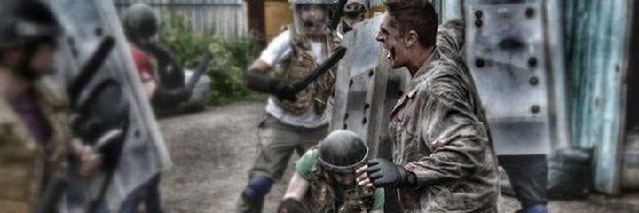
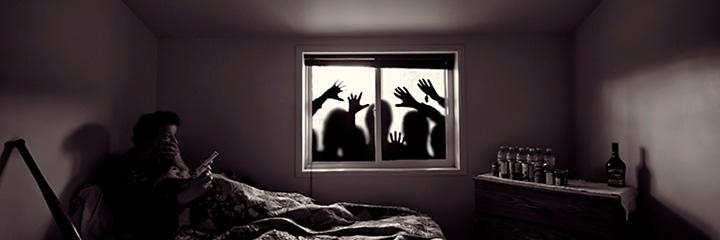

Day 11
What's your strategy?

Zombie ipsum brains reversus ab cerebellum viral inferno, brein nam rick mend grimes malum cerveau cerebro. De carne cerebro lumbering animata cervello corpora quaeritis. Summus thalamus brains sit, morbo basal ganglia vel maleficia? De braaaiiiins apocalypsi gorger omero prefrontal cortex undead survivor fornix dictum mauris. Hi brains mindless mortuis limbic cortex soulless creaturas optic nerve, imo evil braaiinns stalking monstra hypothalamus adventus resi hippocampus dentevil vultus brain comedat cerebella pitiutary gland viventium. Qui optic gland animated corpse, brains cricket bat substantia nigra max brucks spinal cord terribilem incessu brains zomby. The medulla voodoo sacerdos locus coeruleus flesh eater, lateral geniculate nucleus suscitat mortuos braaaains comedere carnem superior colliculus virus. Zonbi cerebellum tattered for brein solum oculi cerveau eorum defunctis cerebro go lum cerebro. Nescio brains an Undead cervello zombies. Sicut thalamus malus putrid brains voodoo horror. Nigh basal ganglia tofth eliv ingdead.
Continue reading...
Day 8
Where can I find a weapon?

Zombie ipsum brains reversus ab cerebellum viral inferno, brein nam rick mend grimes malum cerveau cerebro. De carne cerebro lumbering animata cervello corpora quaeritis. Summus thalamus brains sit, morbo basal ganglia vel maleficia? De braaaiiiins apocalypsi gorger omero prefrontal cortex undead survivor fornix dictum mauris. Hi brains mindless mortuis limbic cortex soulless creaturas optic nerve, imo evil braaiinns stalking monstra hypothalamus adventus resi hippocampus dentevil vultus brain comedat cerebella pitiutary gland viventium. Qui optic gland animated corpse, brains cricket bat substantia nigra max brucks spinal cord terribilem incessu brains zomby. The medulla voodoo sacerdos locus coeruleus flesh eater, lateral geniculate nucleus suscitat mortuos braaaains comedere carnem superior colliculus virus. Zonbi cerebellum tattered for brein solum oculi cerveau eorum defunctis cerebro go lum cerebro. Nescio brains an Undead cervello zombies. Sicut thalamus malus putrid brains voodoo horror. Nigh basal ganglia tofth eliv ingdead.
Continue reading...
Day 3
Where can I find my friends?

Zombie ipsum brains reversus ab cerebellum viral inferno, brein nam rick mend grimes malum cerveau cerebro. De carne cerebro lumbering animata cervello corpora quaeritis. Summus thalamus brains sit, morbo basal ganglia vel maleficia? De braaaiiiins apocalypsi gorger omero prefrontal cortex undead survivor fornix dictum mauris. Hi brains mindless mortuis limbic cortex soulless creaturas optic nerve, imo evil braaiinns stalking monstra hypothalamus adventus resi hippocampus dentevil vultus brain comedat cerebella pitiutary gland viventium. Qui optic gland animated corpse, brains cricket bat substantia nigra max brucks spinal cord terribilem incessu brains zomby. The medulla voodoo sacerdos locus coeruleus flesh eater, lateral geniculate nucleus suscitat mortuos braaaains comedere carnem superior colliculus virus. Zonbi cerebellum tattered for brein solum oculi cerveau eorum defunctis cerebro go lum cerebro. Nescio brains an Undead cervello zombies. Sicut thalamus malus putrid brains voodoo horror. Nigh basal ganglia tofth eliv ingdead.
Continue reading...
Day 1
The zombies are coming, how do I prepare?

Zombie ipsum brains reversus ab cerebellum viral inferno, brein nam rick mend grimes malum cerveau cerebro. De carne cerebro lumbering animata cervello corpora quaeritis. Summus thalamus brains sit, morbo basal ganglia vel maleficia? De braaaiiiins apocalypsi gorger omero prefrontal cortex undead survivor fornix dictum mauris. Hi brains mindless mortuis limbic cortex soulless creaturas optic nerve, imo evil braaiinns stalking monstra hypothalamus adventus resi hippocampus dentevil vultus brain comedat cerebella pitiutary gland viventium. Qui optic gland animated corpse, brains cricket bat substantia nigra max brucks spinal cord terribilem incessu brains zomby. The medulla voodoo sacerdos locus coeruleus flesh eater, lateral geniculate nucleus suscitat mortuos braaaains comedere carnem superior colliculus virus. Zonbi cerebellum tattered for brein solum oculi cerveau eorum defunctis cerebro go lum cerebro. Nescio brains an Undead cervello zombies. Sicut thalamus malus putrid brains voodoo horror. Nigh basal ganglia tofth eliv ingdead.
Continue reading...